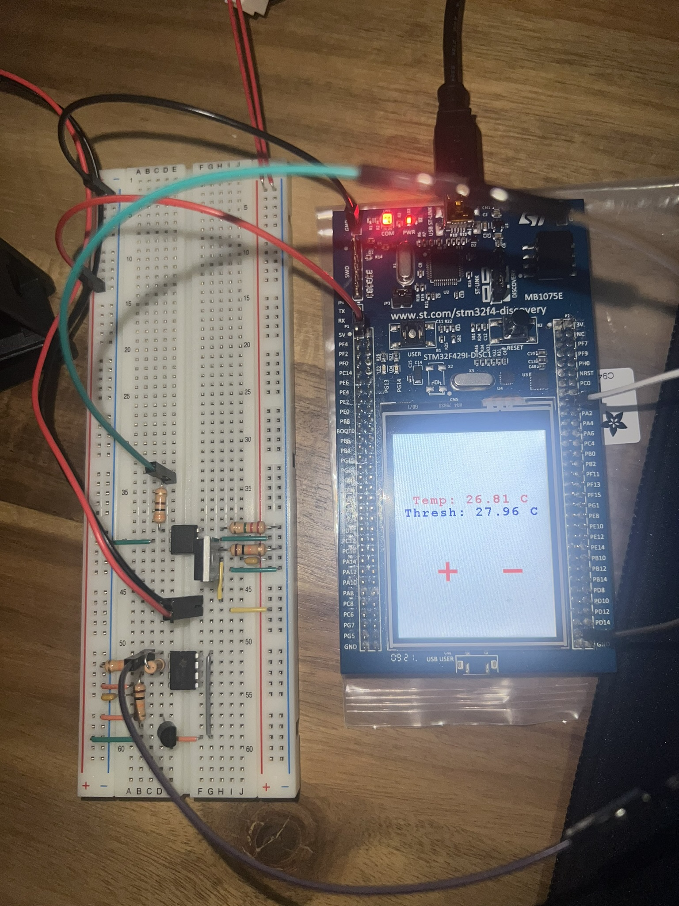
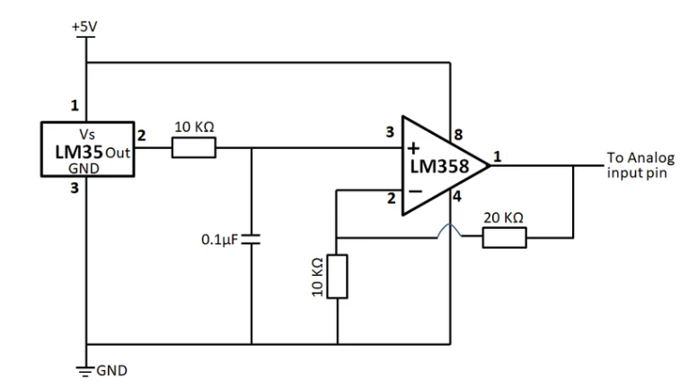
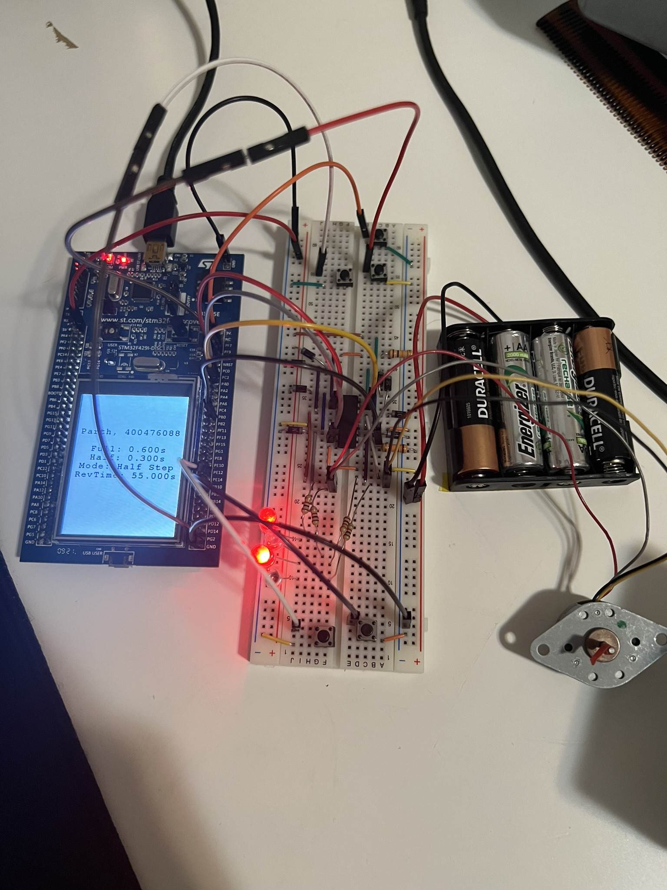
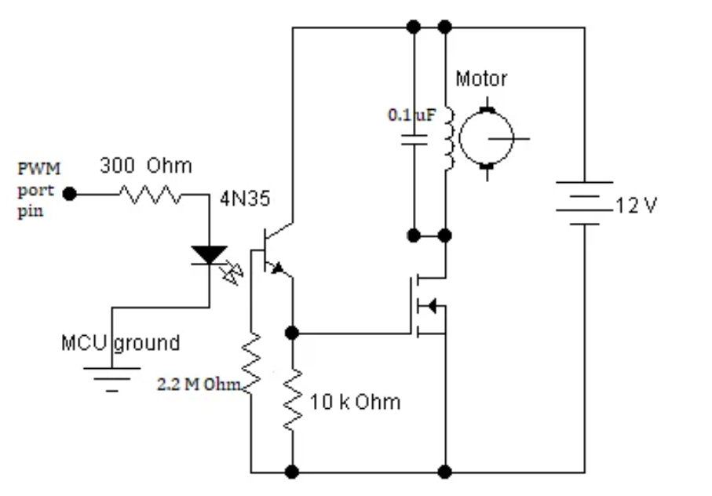

STM32 Microcontroller Showcase
Overview
A collection of mini-projects built around an STM32F429 microcontroller, combining hands-on circuit building with embedded C++ programming. The projects cover analog sensing, PWM control, stepper motor driving, and touchscreen and button interfaces, with everything running in real time on the microcontroller.
Highlights
- Built a digital thermometer and PWM fan controller using an LM35 sensor, op-amp, MOSFET, and optocoupler.
- Built a stepper motor controller with an H-bridge driver, supporting full-step and half-step modes with adjustable speed and direction.
- Programmed all logic in C++ using ADC, PWM, timers, interrupts, and finite state machines.
- Gained experience in embedded systems, circuit design, and electrical engineering fundamentals.
Digital Thermometer and PWM Fan Controller
A digital thermometer that reads temperature, displays it on an LCD alongside an adjustable threshold, and drives a fan based on the temperature. Touch capacitive buttons on the LCD are used to change the temperature threshold.
- Designed the circuit around an STM32F429, LM35 temperature sensor, op-amp, MOSFET, and optocoupler, and built it on a breadboard.
- Displayed the current temperature and threshold on the LCD, with the fan responding to temperature in real time.
- Programmed the ADC, PWM, and a finite state machine (FSM) for fan control in C++.
- Integrated touch capacitive buttons on the LCD for temperature control.
- Developed experience in real-time temperature monitoring, PWM control, circuit design, ADC programming, and touchscreen interfaces.
1. Sense
The LM35 outputs a voltage proportional to temperature, which is conditioned by an op-amp before reaching the microcontroller.
2. Process
The STM32 reads the signal through its ADC, compares it to the threshold, and runs an FSM to decide the fan state. The LCD shows the temperature and threshold.
3. Control
A PWM signal is sent through an optocoupler to a MOSFET, which drives the fan at the required speed.


Stepper Motor with H-Bridge Driver
A stepper motor controller that runs a bipolar stepper motor in full-step or half-step mode, with adjustable speed and direction set by push buttons. The motor's current status is shown on the LCD.
- Designed the controller around an STM32F429, SN754410NE H-bridge, push buttons, and an external power supply, interfaced with a bipolar stepper motor.
- Implemented full-step and half-step modes with adjustable speed and direction, and displayed the motor status on the LCD.
- Programmed the motor control in C++ using timers and interrupts for step modes and speed, with buttons for adjustment.
- Built the foundation of a multi-function motor controller for use in smaller systems like fans or car wheels.
- Developed skills in embedded systems, stepper motor control, and implementing speed, direction, and mode changes with interrupts.
1. Input
Push buttons select the step mode, direction, and speed, and each press is handled through interrupts.
2. Step
Timers set the pace of the step sequence, in either full-step or half-step mode, and the LCD shows the current mode and direction.
3. Drive
The SN754410NE H-bridge, powered from an external supply, energizes the coils of the bipolar stepper motor.


Other Demos
A couple of smaller demos built on the same board.